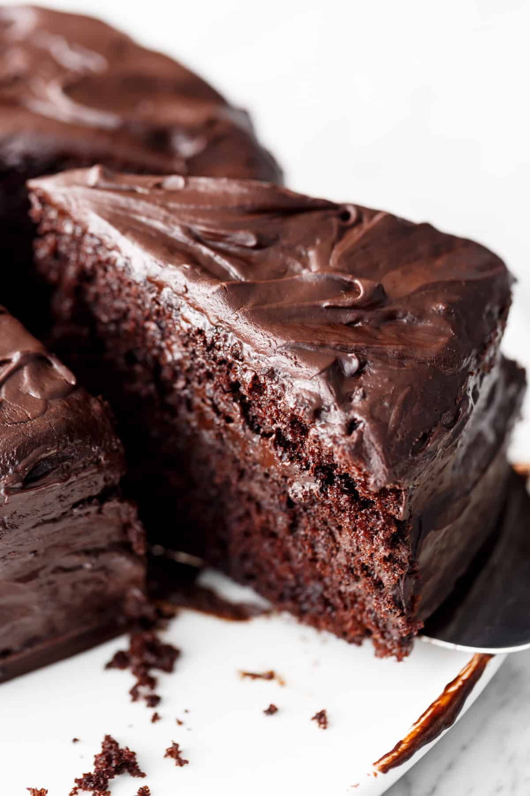

Chocolate Cake

Description:
Chocolate cake or chocolate gâteau
is a cake flavored with melted chocolate, cocoa powder, or both.
Chocolate flavour oozes all through this cake even though it’s only made with cocoa powder,
like our very own Fudgy Chocolate Cake. With a crumb so incredibly tender, this cake stays moist for a good 4-5 days.
Whether you eat it plain, dust it with powdered sugar or serve with dollops of cream or scoops of ice cream, it truly is perfectly perfect!
Ingredients:
- 1 3/4 cups Edmonds Standard Grade Flour
- 1/2 cup cocoa powder
- 2 tsp Edmonds Baking Powder
- 1 cup Chelsea White Sugar
- 125g Tararua Butter
- 2 Tbsp Chelsea Golden Syrup
- 2 eggs
- 1 1/2 cups Meadow Fresh Original Milk
- 2 tsp Edmonds Baking Soda
- 1 tsp vanilla essence
Icing Ingredients
- 1 1/2 cups Chelsea Icing Sugar
- 1 Tbsp cocoa powder
- 50g Tararua Butter, softened
- 2 Tbsp Water
Steps:
- Preheat oven to 180°C bake. Grease and line a high-sided 20cm round cake tin.
- Mix together the Edmonds Standard Grade Flour, cocoa, Edmonds Baking Powder and Chelsea White Sugar.
- In separate bowl, melt the Tararua Butter and Chelsea Golden Syrup together (about 1 minute on high in the microwave usually does it).
- In another bowl whisk the eggs, then whisk in the Meadow Fresh Original Milk, Edmonds Baking Soda and vanilla. Add both the butter mix and the egg/milk mix to dry ingredients and beat on medium for 1 minute.
- Spoon into prepared tin and level the surface. Bake for 50-60 minutes, until the top of the cake bounces back when lightly pressed and a skewer inserted into the centre comes out clean. Cool in tin for 10-15 minutes, then transfer to a wire rack to cool completely.
- for the Icing:Place all icing ingredients in a medium bowl. Beat on low to combine, then increase speed to high and beat until smooth and creamy. Spread onto cooled cake.
Return to main menu